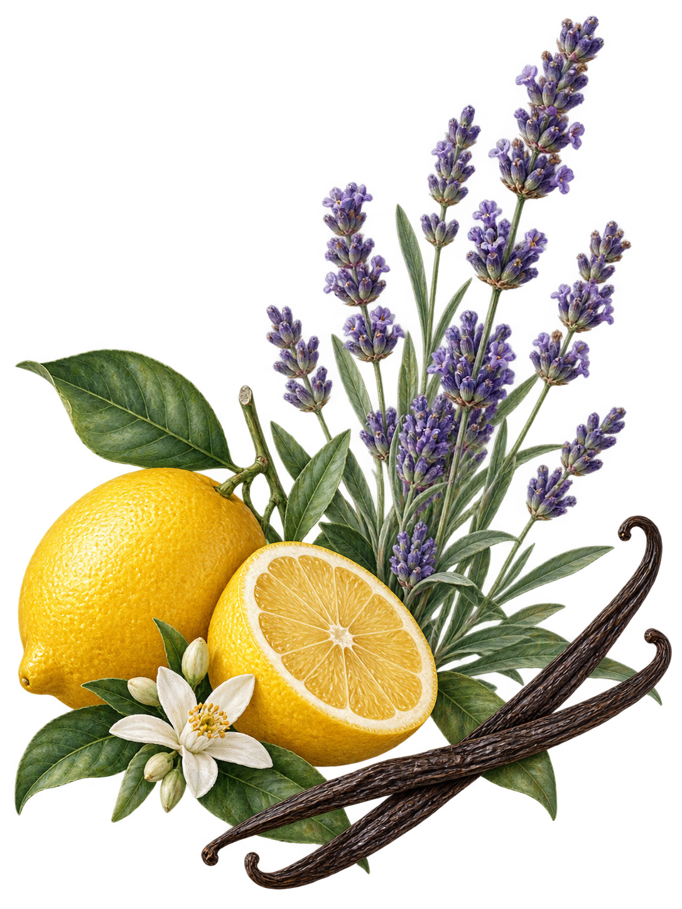

PERFUME ATLASESTUDO OLFATIVO · 05 / 05
Phantom
RABANNE · EAU DE TOILETTE
Observar sem obrigação

Contexto
Perfume para uso pessoal conforme o rótulo.
Atenção
Respire naturalmente. Não é preciso aumentar a intensidade para reconhecer uma nota.
Alternativa sem aroma
Compare uma superfície lisa e um tecido. Observe nitidez e maciez.
Pausa
Interrompa se houver desconforto ou simplesmente quando quiser.
Registro
Uma palavra basta. Não perceber mudança também é uma observação válida.
Limite
Este perfume não é uma indicação de tratamento nem uma base para uso em difusores.
Representação das notas olfativas.
Não identifica os ingredientes do frasco.
Não identifica os ingredientes do frasco.